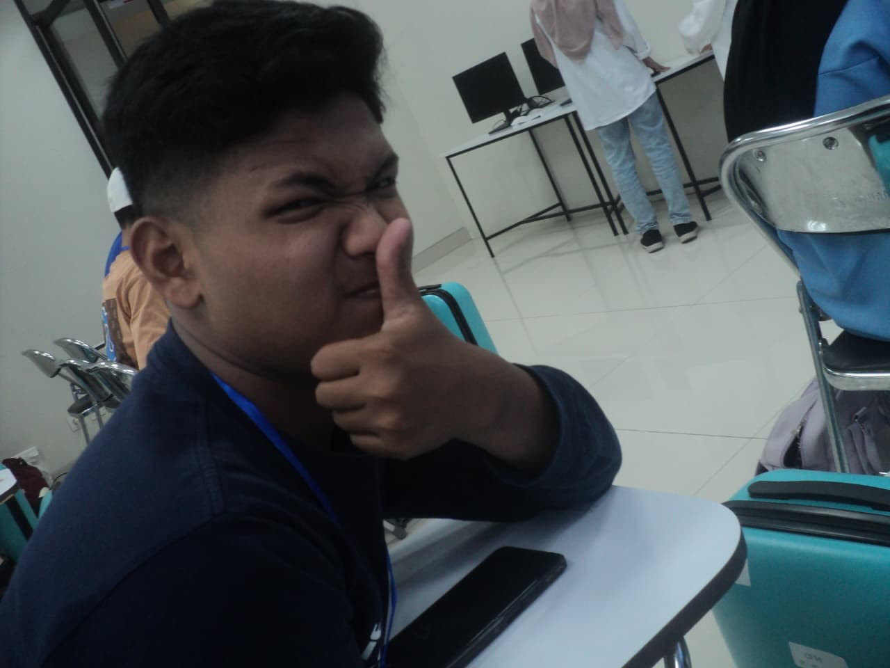

Selamat Datang Teman-Teman...
Perkenalkan, Saya Dhani Wira Saputra.
Saya mahasiswa program studi D4 Teknik Informatika, Politeknik Negeri Jakarta. Saat ini saya sedang menempuh semester 2 untuk membangun fondasi kuat di dunia teknologi informasi. Saya memiliki ketertarikan pada artificial intelligence dan machine learning.
Fokus Belajar Saat Ini
Logika Pemrograman & Pengembangan Web